4. Форма редактирования РТ (AdvanceTW)
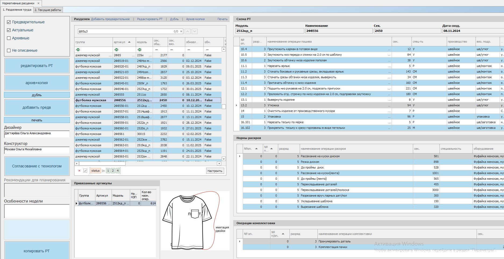
Таблица заголовков РТ
Схема РТ
Нормы раскроя
Операции комплектовки
Информацию по привязанным к текущему РТ артикулам
Изображение изделия
Информацию об особенностях изделия, комментарии для планирования, дизайнер и конструктор модели.
Так же, на главном окне есть элементы управления – фильтры, поиск, кнопки для работы с разделениями труда.
На форме реализовано несколько способов работы с информацией, поиска нужного разделения труда по заданным параметрам, фильтрации и анализа существования РТ.
Для отображения релевантной информации в таблице воспользуйтесь имеющимися фильтрами: фильтры статусов и фильтр «не описанные».
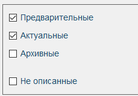
Фильтры статусов (Предварительные, Актуальные, Архивные) - позволяют отображать записи в выбранных статусах. Выбрав Архивные – увидим в таблице записи только в статусе «Архив», Предварительные – только со статусом «Предварительный», Актуальные – те, что сейчас используются в производстве. Фильтры можно комбинировать.
Комплексный фильтр «Не описанные» отображает записи, которым не назначены схемы разделений труда.
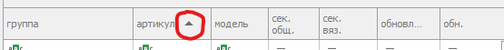
Каждый столбец может быть отсортирован в порядке убывания/возрастания с помощью стрелочки в заголовке (появляется при фокусировке на столбце)
Поиск нужного РТ осуществляется в строке поиска. Для этого в строке поиска вводится нужное значение (напр. “джемпер…”, «ф85» и др.. ). При успешном поиске в таблице будут подсвечены все найденные значения. Так же, рядом со строкой поиска будет указано количество совпадений и отобразятся стрелки навигации. Нажимая на стрелки можно перемещаться между результатами поиска. В полосе прокрутки справа будут подсвечены местоположения найденных строк в таблице.
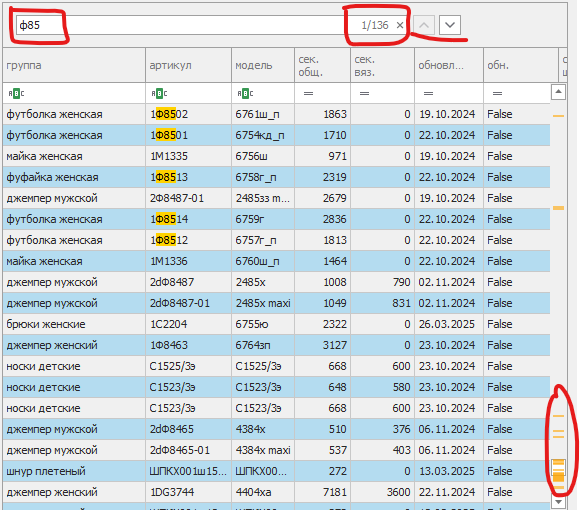
После нахождения результатов можно применить сортировку по колонке, чтобы увидеть все результаты рядом:
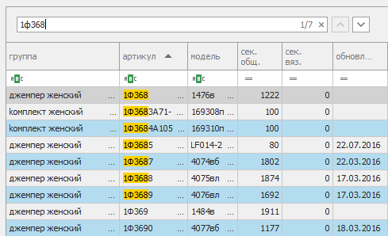
Если искомой строки нет, в результатах поиска ничего не отобразится, рядом со строкой поиска будет 0, фокус в таблице будет на последней подходившей строке:
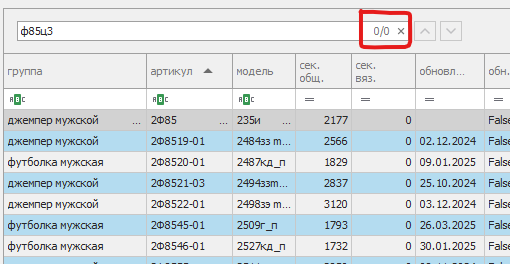
Для работы с основной формой программы используются кнопки:
У кнопок пока два варианта расположения, желательно выбрать наиболее удобный.
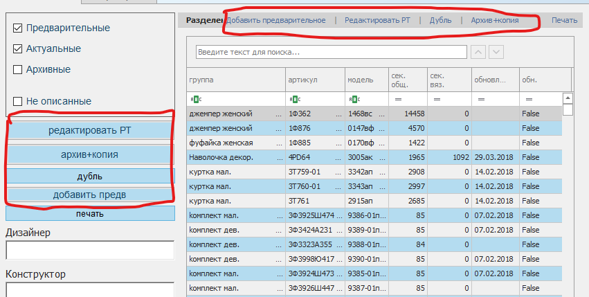
Чтобы создать пустое РТ:
Чтобы внести изменения в уже созданное РТ:
Создать РТ – копию уже существующего:
При необходимости убрать существующий РТ в архив — можно создать его копию (с изменениями, если потребуется):
Этот механизм реализует создание нового РТ на основе базового. Базовое РТ получает признак «архивное», новое становится актуальным.
Важно! Если базовое РТ имеет незавершённые операции, его нельзя назначить архивным, поэтому новое РТ создаётся в статусе Предварительное. В статус Актуальное оно перейдёт в тот момент, когда все операции по базовому будут завершены и его отправят в архив (вкладка Предварительный архив).
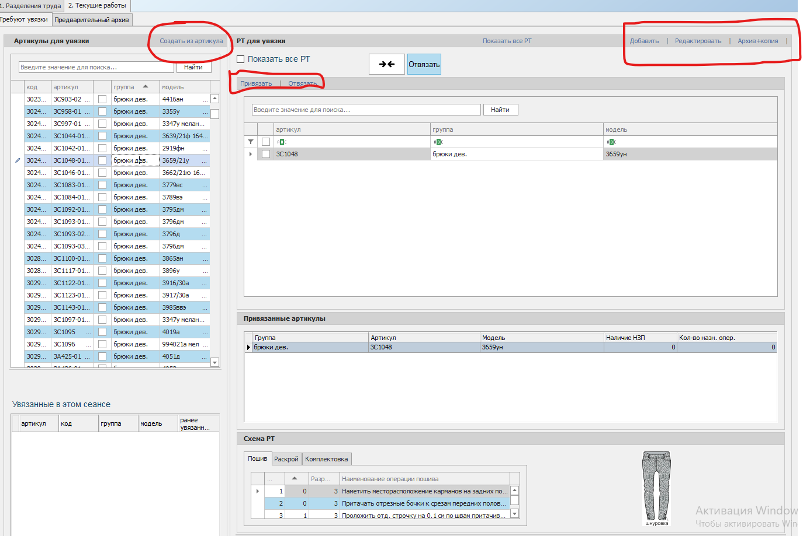
Вкладка Текущие работы служит для отображения созданных моделей в таблице артикулов, к которым ещё не привязаны разделения труда. Они отображаются в таблице «Артикулы для увязки». Подходящие РТ отображаются в таблице «РТ для увязки».
При выборе строки в таблице артикулов, в таблице РТ для увязки будут подобраны подходящие разделения.
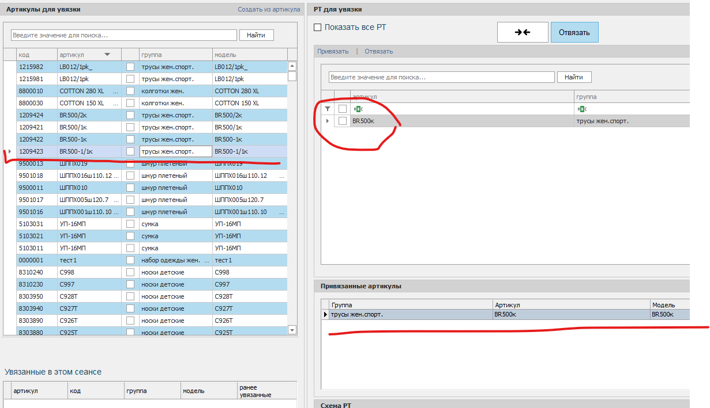
Для увязки можно выбрать одно из них или найти нужное РТ с помощью поиска.
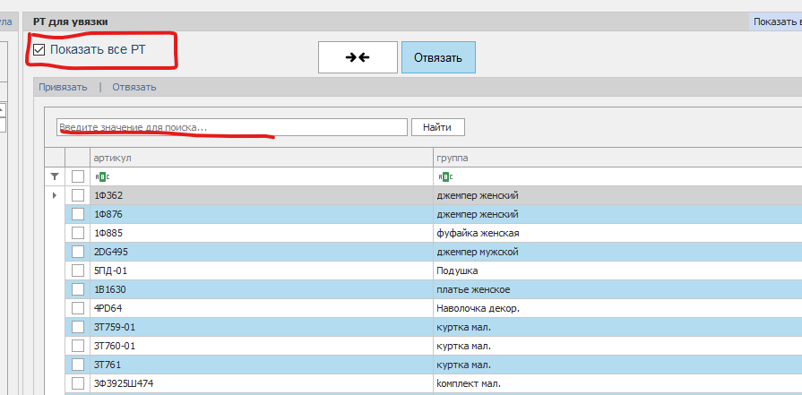
Чтобы увязать два артикула, нужно в каждой таблице отметить нужные строки и нажать кнопку «Привязать» (или кнопку со стрелками).
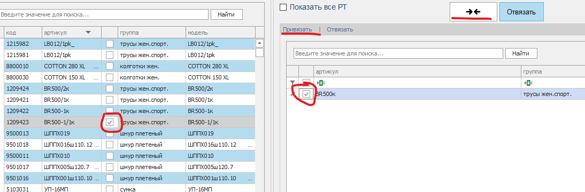
Далее необходимо подтвердить действие в окне подтверждения:
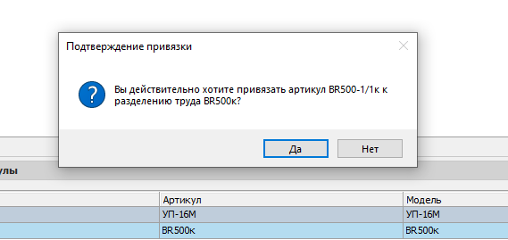
При успешной увязке, данные отобразятся в таблице «Увязанные в этом сеансе»:
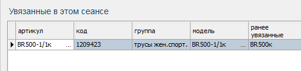
После этого запись в таблице «Артикулы для увязки» исчезнет.
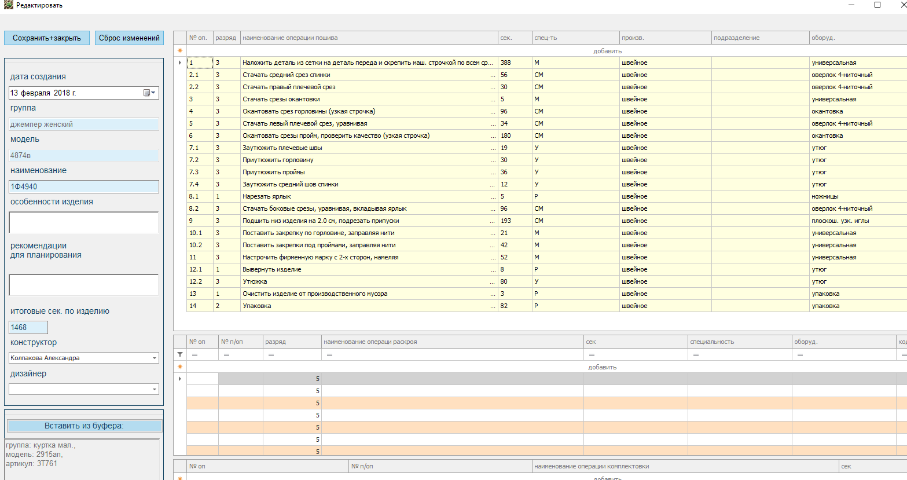